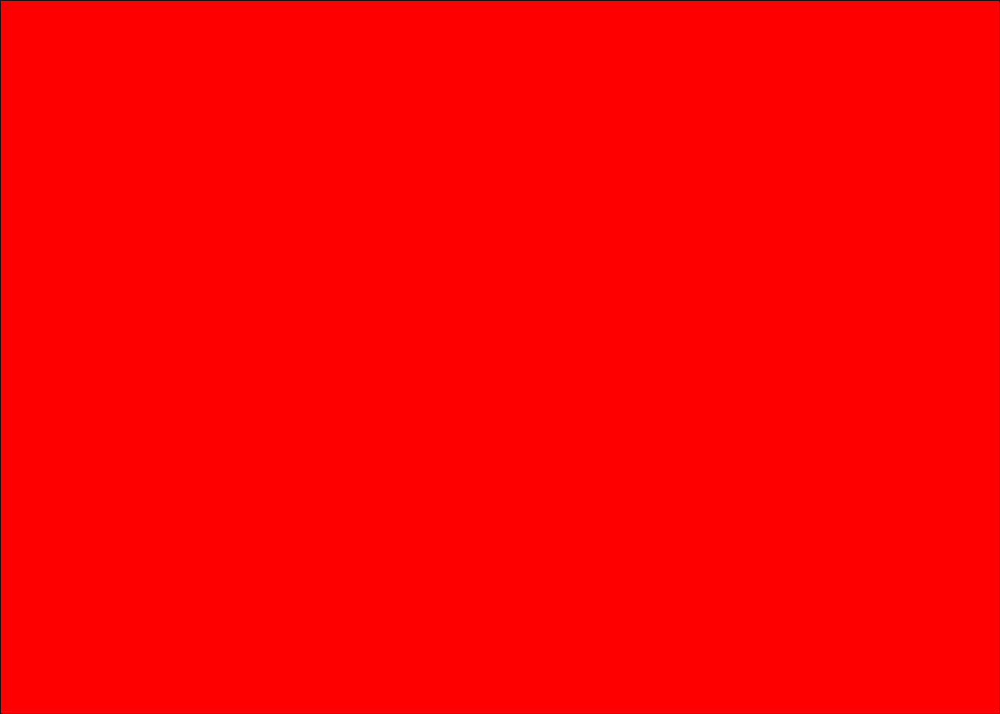
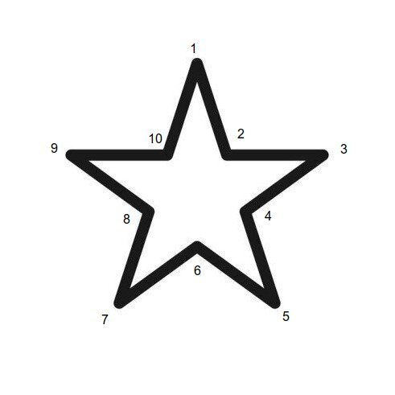
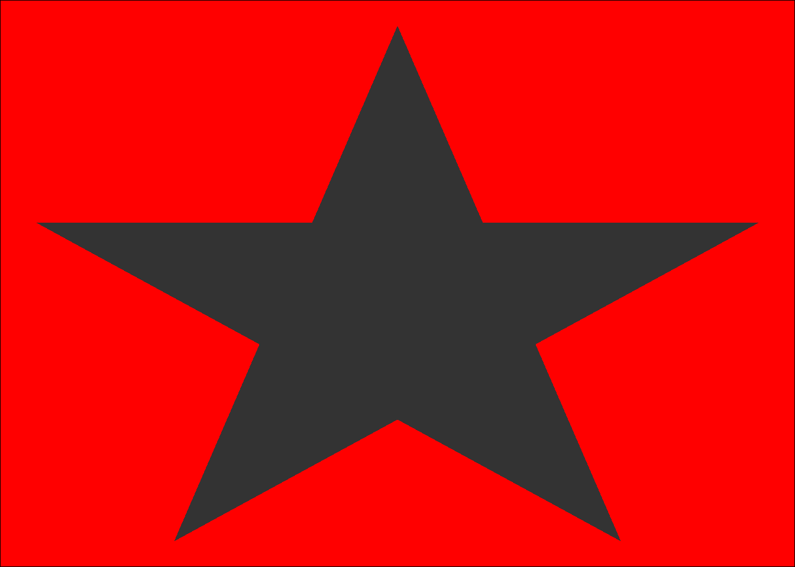
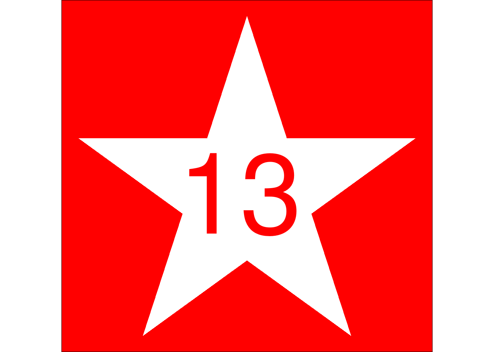
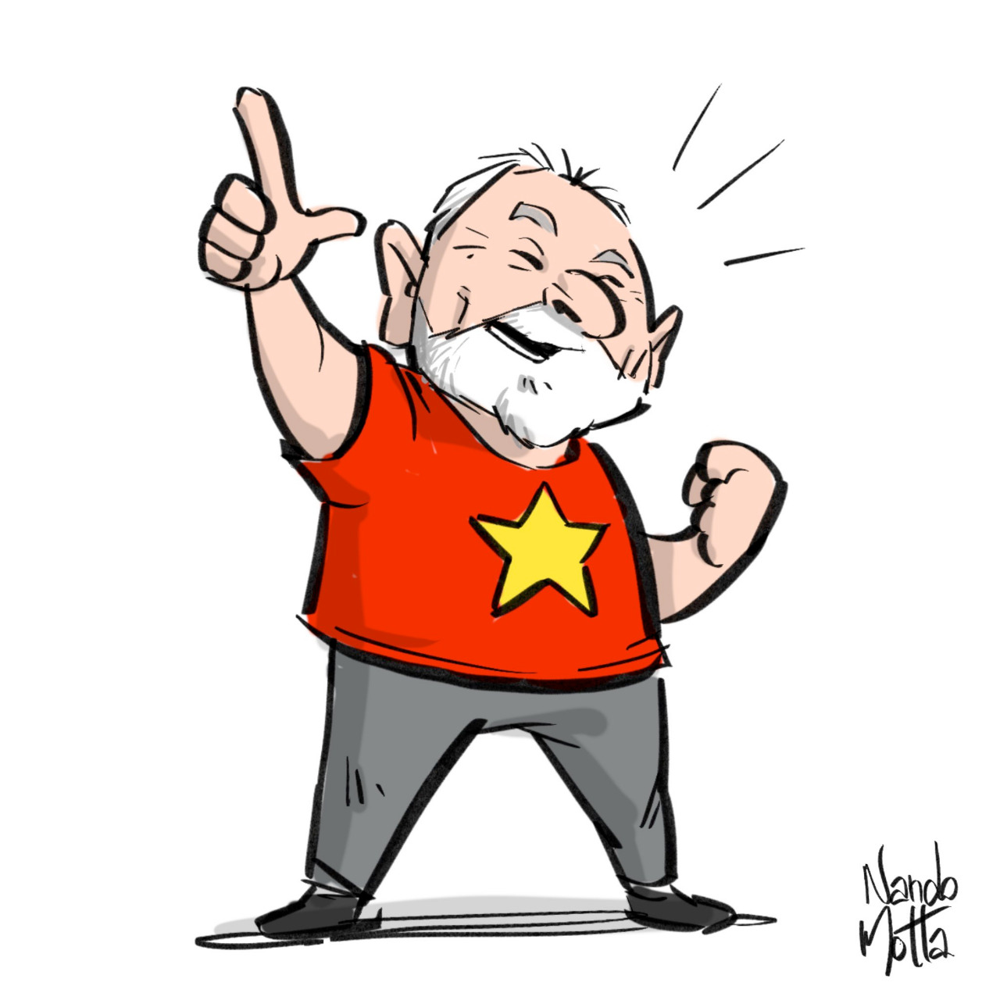

What is this post about?
- Drawing a star using
ggplot2in R Language.
History:
In Brazil we are about to choose the next President for the 4 years ahead.
I am a workers party supporter (PT, Partido dos Trabalhadores), with Lula as our candidate.
With this being told, the PT flag is a white star in a red background, my plan is to draw this, showing all the steps to do it.
Hands on!
First of all, we will need to load dplyr and ggplot2, the package of functions that we will use in this session:
library(dplyr) # data wrangling
library(ggplot2) # plotsLet’s start by creating our blank canvas:
ggplot()Now we can ask to ggplot to put a void theme (without texts or axis), and then to add a red background:
red <- ggplot() +
theme_void() +
theme(plot.background = element_rect(fill = "red"))
red
The challenge now is to draw by draft our star. First, let’s study how it is:

To do this, let’s create a tibble with the x and y coordinates (11 to close the polygon):
r <- rep_len(x = c(100, 100 * sin(pi/10) / cos(pi/5)),
length.out = 11)
star <- tibble(coord = 1:11,
x = r * sin(seq(0, 2 * pi, length.out = 11)),
y = r * cos(seq(0, 2 * pi, length.out = 11)))
knitr::kable(star, align = "c")| coord | x | y |
|---|---|---|
| 1 | 0.00000 | 100.0000 |
| 2 | 22.45140 | 30.9017 |
| 3 | 95.10565 | 30.9017 |
| 4 | 36.32713 | -11.8034 |
| 5 | 58.77853 | -80.9017 |
| 6 | 0.00000 | -38.1966 |
| 7 | -58.77853 | -80.9017 |
| 8 | -36.32713 | -11.8034 |
| 9 | -95.10565 | 30.9017 |
| 10 | -22.45140 | 30.9017 |
| 11 | 0.00000 | 100.0000 |
Star coordinates.
Now, let’s include the star coordinates (and the paths) within the red plot:
red +
geom_polygon(data = star, mapping = aes(x = x, y = y))
The next step is to paint the star in white color, and also fix the coordinates:
pt <- red +
geom_polygon(data = star, mapping = aes(x = x, y = y),
fill = "white") +
coord_equal()
pt Our PT flag is ready!
Just to complete, we can include the number of the party in the middle of the star, the number 13!
pt +
annotate(geom = "text",
label = 13,
x = -4,
y = 0,
size = 40,
color = "red")
We have our flag!
Finishing
The next step is to dress all red at October 30th 2022, vote in our great eletronic voting machines, and hope for the best!
Make the L!

Cheers,